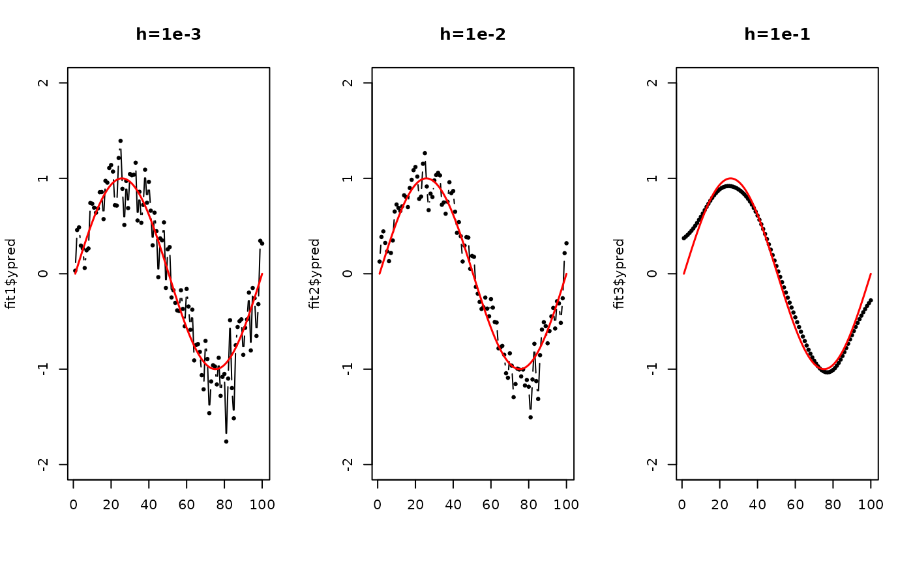

Given \(N\) observations \(X_1, X_2, \ldots, X_N \in \mathcal{M}\) and scalars \(y_1, y_2, \ldots, y_N \in \mathbf{R}\), perform the Nadaraya-Watson kernel regression by $$\hat{m}_h (X) = \frac{\sum_{i=1}^n K \left( \frac{d(X,X_i)}{h} \right) y_i}{\sum_{i=1}^n K \left( \frac{d(X,X_i)}{h} \right)}$$ where the Gaussian kernel is defined as $$K(x) := \frac{1}{\sqrt{2\pi}} \exp \left( - \frac{x^2}{2}\right)$$ with the bandwidth parameter \(h > 0\) that controls the degree of smoothness.
Usage
riem.m2skreg(
riemobj,
y,
bandwidth = 0.5,
geometry = c("intrinsic", "extrinsic")
)Arguments
- riemobj
a S3
"riemdata"class for \(N\) manifold-valued data corresponding to \(X_1,\ldots,X_N\).- y
a length-\(N\) vector of dependent variable values.
- bandwidth
a nonnegative number that controls smoothness.
- geometry
(case-insensitive) name of geometry; either geodesic (
"intrinsic") or embedded ("extrinsic") geometry.
Value
a named list of S3 class m2skreg containing
- ypred
a length-\(N\) vector of smoothed responses.
- bandwidth
the bandwidth value that was originally provided, which is saved for future use.
- inputs
a list containing both
riemobjandyfor future use.
Examples
# \donttest{
#-------------------------------------------------------------------
# Example on Sphere S^2
#
# X : equi-spaced points from (0,0,1) to (0,1,0)
# y : sin(x) with perturbation
#-------------------------------------------------------------------
# GENERATE DATA
npts = 100
nlev = 0.25
thetas = seq(from=0, to=pi/2, length.out=npts)
Xstack = cbind(rep(0,npts), sin(thetas), cos(thetas))
Xriem = wrap.sphere(Xstack)
ytrue = sin(seq(from=0, to=2*pi, length.out=npts))
ynoise = ytrue + rnorm(npts, sd=nlev)
# FIT WITH DIFFERENT BANDWIDTHS
fit1 = riem.m2skreg(Xriem, ynoise, bandwidth=0.001)
fit2 = riem.m2skreg(Xriem, ynoise, bandwidth=0.01)
fit3 = riem.m2skreg(Xriem, ynoise, bandwidth=0.1)
# VISUALIZE
xgrd <- 1:npts
opar <- par(no.readonly=TRUE)
par(mfrow=c(1,3))
plot(xgrd, fit1$ypred, pch=19, cex=0.5, "b", xlab="", ylim=c(-2,2), main="h=1e-3")
lines(xgrd, ytrue, col="red", lwd=1.5)
plot(xgrd, fit2$ypred, pch=19, cex=0.5, "b", xlab="", ylim=c(-2,2), main="h=1e-2")
lines(xgrd, ytrue, col="red", lwd=1.5)
plot(xgrd, fit3$ypred, pch=19, cex=0.5, "b", xlab="", ylim=c(-2,2), main="h=1e-1")
lines(xgrd, ytrue, col="red", lwd=1.5)

par(opar)
# }